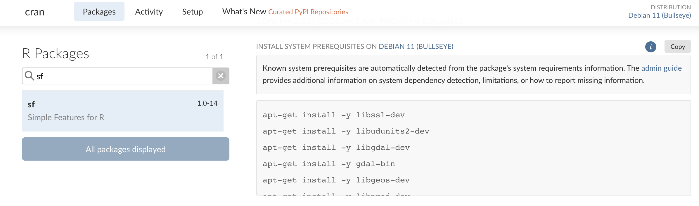

Using Valve with Docker
Source:vignettes/articles/Using-Valve-with-Docker.Rmd
Using-Valve-with-Docker.RmdValve is intended to make plumber APIs more effective in a production setting. It is recommended to deploy plumber APIs to production in a Docker container (or use Posit Connect if you have company budget and more use cases than a single API).
This document will describe two different approaches to making
Dockerfiles for using valve. One using rocker/r-ver as the
base image and the other that uses rhub/r-minimal.
Both approaches have their benefits. Using rocker/r-ver,
it is easier to identify and add system dependencies. Whereas using
rhub/r-minimal the image is 1/10th of the size but some
quality of life things such determining system dependencies and having R
package binaries pre-built are not present.
In order to keep the Docker images lightweight and as dependency free as possible, a multi-stage build process is used. This allows us to extract only some artifacts from one image and use another as the base image.
Broadly, the process is like so:
- Install
valveusing a “builder” - Specify our base image
- Copy the valve binary into our image
- Install plumber’s system dependencies
- Install R packages
- Start valve in your
ENTRYPOINT
Using rocker/r-ver
The rocker/r-ver images allow you to specify a specific
version of R in the tag. This should match with the version of R that
you are using. Determine yours with:
getRversion()
#> [1] '4.3.0'Rust Builder
The first part of our Dockerfile needs to specify our builder. This will be the slim Rust default image. Inside of that image we will install valve from crates.io.
# stage 1: install valve
FROM rust:slim AS builder
RUN cargo install valve-rs --no-default-featuresEverything else
Once that has been completed, we can move onto the creation of our
Docker image that will serve plumber APIs via Valve. Here we specify the
rocker/r-ver image we want based on the tag (the bit that
follows the colon). This should match your R-version for the best chance
at reproducibility.
Next, some environment variables for Valve to use are specified. The
VALVE_HOST must be 0.0.0.0 which is a
Docker requirement. The VALVE_PORT can be changed. Then,
the image is configured to always use RStudio Package Manager when using
the {renv}
package which will provide us with binaries for speedy package
install.
# stage 2: configure the container to run plumber
FROM rocker/r-ver:4.3.0
ENV VALVE_HOST 0.0.0.0
ENV VALVE_PORT 8000
ENV RENV_CONFIG_REPOS_OVERRIDE https://packagemanager.rstudio.com/cran/latestThe next part of the Dockerfile contains steps to
install the required system dependencies to install and run plumber
APIs.
RUN apt-get update -qq && apt-get install -y --no-install-recommends \
libcurl4-openssl-dev \
libicu-dev \
libsodium-dev \
libssl-dev \
make \
zlib1g-dev \
&& apt-get cleanWith the appropriate system dependencies, the R packages can be
installed. First renv is installed and then
renv is used to install package dependencies. This requires
an renv.lock file to be found in the directory. Then the
plumber.R file (also assumed to be in the root) is copied
to /api/plumber.R.
Note that if you have additional files that accompany your plumber API they also need to be copied and moved.
COPY renv.lock renv.lock
RUN Rscript -e "install.packages('renv')"
RUN Rscript -e "renv::restore()"
COPY plumber.R /api/plumber.RLastly, we copy the valve binary into our Docker image, expose the port that the API will be served on, and start the application!
The ENTRYPOINT is where you have control over how Valve
will scale. Most importantly, the -f flag should point to a
plumber.R script—wherever that might be in your Dockerfile.
The host must be 0.0.0.0 for a Docker container.
You can configure the additional arguments as you need. See the README
for more on how these arguments work.
# get binary from builder
COPY --from=builder /usr/local/cargo/bin/valve /usr/local/bin/
# open the port for valve
EXPOSE ${VALVE_PORT}
# Start Valve app
ENTRYPOINT valve -f /api/plumber.R -h $VALVE_HOST -p $VALVE_PORT -w 5 -n 5 --check-unused 10 --max-age 300At the end of this article, is the complete Dockerfile.
Using rhub/r-minimal
The r-minimal base image is extraordinarily small and is
very powerful. If you are new to Docker and know little about linux, I
would not recommend this approach as it does have some limitations
such as no PNG, Java, or X11 support among others. If, however, you have
code with dependencies that do not need these, or you want to go fast,
this is the approach for you.
Additionally, R packages should be installed using the small CLI tool
that is included in the base image installr.
installr uses {pak} to install
packages rather than renv. View the github repo for more on
how the CLI works. One downside of this is that R packages are built
from source which drastically slows down build time.
The approach to building the Dockerfile is very similar to the
r-ver image. First we specify the builder and install
valve, then specify our base image as rhub/r-minimal:4.3.0.
After that, we copy over the valve binary, install our system
dependencies, R packages, and then configure the
ENTRYPOINT.
FROM rust:1.71.1-alpine AS builder
RUN apk add musl-dev
RUN cargo install valve-rs --no-default-features
FROM rhub/r-minimal:4.3.1
# Copy the binary from the builder stage
COPY --from=builder /usr/local/cargo/bin/valve /usr/local/bin/
# Install additional packages and perform other setup steps
RUN apk add --no-cache --update-cache \
--repository http://nl.alpinelinux.org/alpine/v3.11/main \
autoconf=2.69-r2 \
automake=1.16.1-r0 && \
installr -d \
-t "libsodium-dev curl-dev linux-headers autoconf automake" \
-a libsodium \
plumber
EXPOSE 8000
COPY plumber.R /api/plumber.R
# Start Valve app
ENTRYPOINT valve -f /api/plumber.R -h 0.0.0.0 -p 8000 --workers 10 --n-max 10 --check-unused 10 --max-age 300Complete rhub/r-ver Dockerfile
#> # stage 1: install valve
#> FROM rust:slim AS builder
#> RUN cargo install valve-rs --no-default-features
#>
#> # stage 2: configure the container to run plumber
#> FROM rocker/r-ver:4.3.0
#>
#> ENV VALVE_HOST 0.0.0.0
#> ENV VALVE_PORT 8000
#>
#> # always use RSPM
#> ENV RENV_CONFIG_REPOS_OVERRIDE https://packagemanager.rstudio.com/cran/latest
#>
#> RUN apt-get update -qq && apt-get install -y --no-install-recommends \
#> libcurl4-openssl-dev \
#> libicu-dev \
#> libsodium-dev \
#> libssl-dev \
#> make \
#> zlib1g-dev \
#> && apt-get clean
#>
#> COPY renv.lock renv.lock
#> RUN Rscript -e "install.packages('renv')"
#> RUN Rscript -e "renv::restore()"
#> COPY plumber.R /api/plumber.R
#>
#> # get binary from builder
#> COPY --from=builder /usr/local/cargo/bin/valve /usr/local/bin/
#>
#> # open the port for valve
#> EXPOSE ${VALVE_PORT}
#>
#> # Start Valve app
#> ENTRYPOINT valve -f /api/plumber.R -h $VALVE_HOST -p $VALVE_PORT --workers 10 --n-max 10 --check-unused 10 --max-age 300The above Dockerfile is included in valve and can be
found via
system.file("docker/Dockerfile", package = "valve"). It was
built with the included plumber API
system.file("docker/plumber.R", package = "valve").
To replicate, copy the files into a directory of your choosing.
Ensure Docker desktop is open. Then build the container with
docker build -t valve:latest .. Then you can run the
container with:
docker run -p 8000:8000 valve:latestAddenda
Determining System Dependencies
One of the challenges in building Docker images is knowing what
system dependencies you need to include in your build. The easiest and
interactive way to determine what dependencies you need in your build is
to visit Posit Package
Manager. For each package you can scroll down to
Install System Prerequisites on {Distro} section.

This enumerates all of the system dependencies that you need to install on your machine before the package can be installed. The instructions show one install command per dependency but it can typically be simplified into a single command by separating the libraries with a space. For example installing the first few deps can be simplified as:
apt-get install -y libssl-dev libudunits2-dev libgdal-devAlternatively, if you want to do this more programmatically, you can
do so using pak which is honestly the way that I prefer to
do it!
pak::pkg_system_requirements("sf", "ubuntu", "22.04")
#> [1] "apt-get install -y libudunits2-dev libssl-dev libgdal-dev gdal-bin libgeos-dev libproj-dev libsqlite3-dev"A note on number of workers
It is pretty tough to estimate the total number of worker threads available on a system. Right now, there is no check in place to see if your number of workers and connections exceeds the total number of threads available. If it does, there is a chance that calls to your Valve app may error out since there is thread contention. In general, its a good idea to only ask for what you need. For the smallest DigitalOcean compute, you should not exceed 3 workers and connections. Consult docs to see how many threads are available.